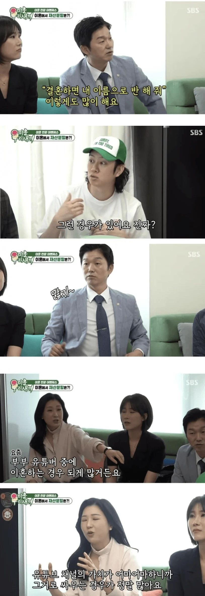
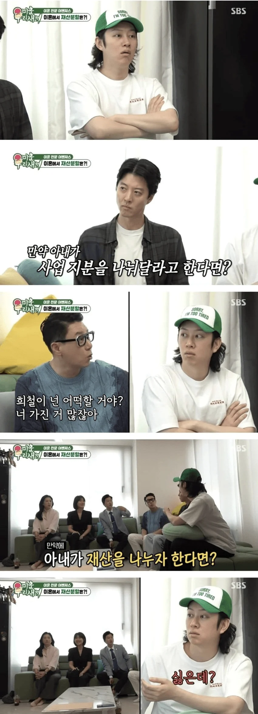

가성비의 5년 약속의 10년 몰라?
그걸 커뮤에서 쓰고있네? ㅋㅋ
3,5,10 이 괜히나왔냐?판례보고 떠들어대니까 나온거지
결혼 전 재산이 왜 분할 인데 유지보수비용? 그러면 집사고용해서 일시키면 재산분할 대상이 안되는줄아냐? ㅋㅋ
중국은 재산분할을 노린 이혼이 급증하자 2025년에 최고인민법원(대법원)에서 재산 기여도 해석을 엄격하게 하라고 판결함.
결혼전 재산은 배우자 기여도가 0이라서 재산분할 대상이 안 되고, 사업으로 키운 재산도 아내가 사업을 도운게 아니면 기여도가 매우 적음.
그 대신 가사노동 보상권이라는 기준을 적용해서 아내의 노동력을 돈으로 환산해서 보상함.
딱 "거짓말은 하지 않았다" 수준으로 떠드네...결혼전 재산은 20~30년은 결혼생활 해야 분할대상인데
돈은 버는것만큼이나 유지하는것도 중요해서 사실상 그쯤되면 같이번게 맞음
그리고 남초라서 그런가 여자들은 취집하고 남의인생 편승해서 꿀빨려고하는부류가 다수인줄아는데
인간이라면 기본적으로 상승욕구가 있음. 남녀 다 떠나서
결혼 후 쌓은 재산이 반으로 갈라지는건
둘중 하나가 그 상승욕구를 포기하고 남은 인생을 살아야되기 때문이야. 그 재산의 크기나 난이도를 따지는게 아님
둘이서 바텀서는데 한명은 무조건 서포터를 해야되는 상황같은거
뭐? 딩크에다가 아침밥도 안차려준다고?
커뮤좀 그만봐라...세상은 니 생각보다 친절하고 상냥하다